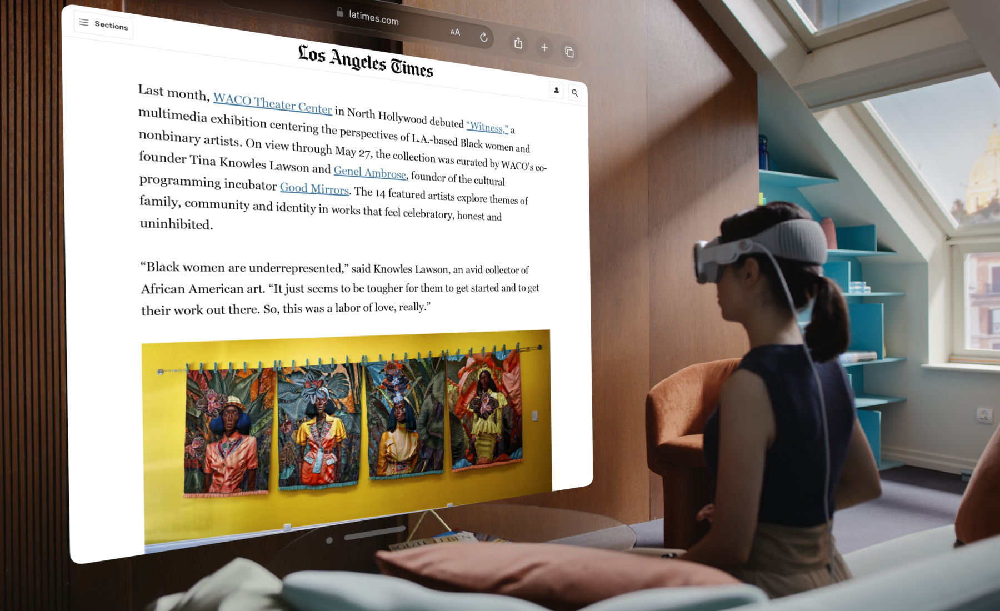
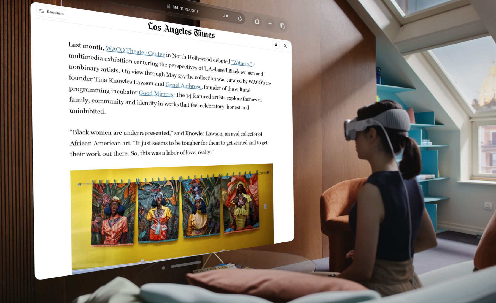

Progresele în tehnologia procesorului au dus la creșteri semnificative în puterea de calcul. Procesoarele au devenit mult mai rapide și mai eficiente, trecând de la arhitecturi de 32 de biți la 64 de biți și chiar mai mult. Progresele în designul și tehnologia cipurilor au permis o creștere continuă a vitezei de calcul și o scădere a consumului de energie.
În timp ce calculatoarele personale (PC-urile) au rămas o parte importantă a mediului de calcul, trendul spre dispozitive mai mici și mai portabile a fost evidențiat prin apariția laptopurilor, tabletelor și smartphone-urilor. Aceste dispozitive au devenit tot mai puternice și mai versatile, permițând utilizatorilor să aibă acces la computație aproape oriunde și oricând.
Capacitățile de stocare au crescut exponențial, de la hard disk-uri cu capacități mici la SSD-uri (unități de stocare pe bază de memorie flash) mult mai rapide și mai eficiente energetic, care oferă acum terabyți de stocare într-un format mult mai compact.
Interacțiunea cu computerele s-a schimbat profund, cu trecerea de la tastaturi și mouse-uri la ecrane tactile, comenzi vocale și tehnologii de realitate virtuală și augmentată, care oferă modalități mai naturale și intuitive de a interacționa cu dispozitivele.
În ultimii ani, cercetările în domeniul calculului cuantic au accelerat, deschizând perspective incredibile în ceea ce privește puterea de calcul și rezolvarea problemelor complexe într-un mod mult mai eficient decât calculatoarele tradiționale.
Calculatorul a devenit un element omniprezent și indispensabil în lumea modernă, jucând un rol vital într-o gamă largă de domenii și activități.